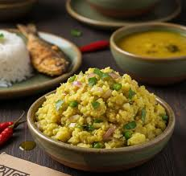

ALUR VHORTA RECIPE
Alur vhorta is a dish which is made with mashed potato , onion , red chili , mastered oil & salt. It is very popular as Bangali treditional food.
Ingredients:
- Potato
- Onion
- Red chili
- Mastered oil
- Salt
Instructions
- Firstly, boil the potatoes & slice some onions(acording to need)
- Then mashe the potatoes and mix the sliced onions with salt and chili felcks (put salt & chili acording to your taste)
- After that put some mastered oil in it & mix them all very well.
- Now your alur vhorta is ready . Enjoy it with rice .
